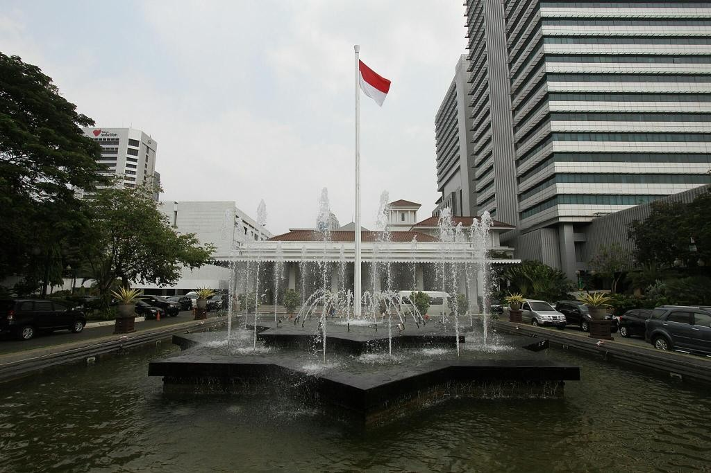
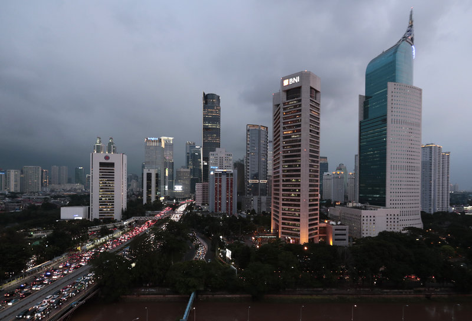
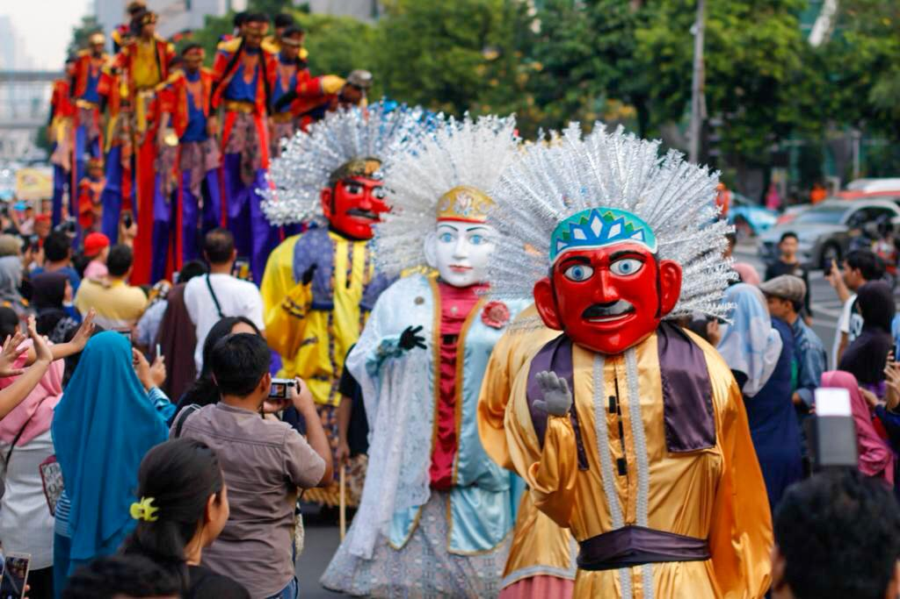

Sejarah

Nama Jakarta sudah digunakan sejak masa pendudukan Jepang tahun 1942, untuk menyebut wilayah bekas
Gemeente Batavia yang diresmikan pemerintah Hindia Belanda pada tahun 1905.[15] Nama "Jakarta" merupakan
kependekan dari kata Jayakarta (aksara Dewanagari: जयकृत), yaitu nama dari Bahasa Sanskerta yang diberikan oleh
orang-orang Demak dan Cirebon di bawah pimpinan Fatahillah (Faletehan) setelah menyerang dan berhasil menduduki
pelabuhan Sunda Kelapa pada tanggal 22 Juni 1527 dari Portugis.

Geografis
Jakarta memiliki luas sekitar 664,01 km² (lautan: 6.977,5 km²), dengan penduduk berjumlah 10.557.810 jiwa (2019).
Wilayah metropolitan Jakarta (Jabodetabek) yang berpenduduk sekitar 28 juta jiwa.
Jakarta berlokasi di sebelah utara Pulau Jawa, di muara Ciliwung, Teluk Jakarta.
Jakarta terletak di dataran rendah pada ketinggian rata-rata 8 meter dpl. Hal ini mengakibatkan Jakarta sering dilanda banjir.
Sebelah selatan Jakarta merupakan daerah pegunungan dengan curah hujan tinggi.
Jakarta dilewati oleh 13 sungai yang semuanya bermuara ke Teluk Jakarta.

Budaya
Budaya Jakarta merupakan budaya mestizo, atau sebuah campuran budaya dari beragam etnis. Sejak zaman Belanda,
Jakarta merupakan ibu kota Indonesia yang menarik pendatang dari dalam dan luar Nusantara.
Suku-suku yang mendiami Jakarta antara lain, Jawa, Sunda, Minang, Batak, dan Bugis.
Selain dari penduduk Nusantara, budaya Jakarta juga banyak menyerap dari budaya luar, seperti budaya Arab, Tiongkok, India, dan Portugis.